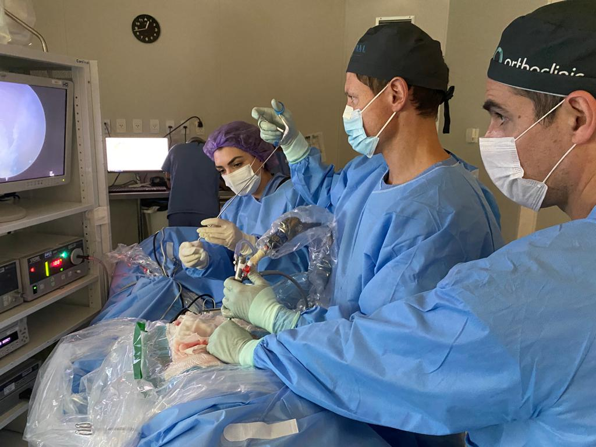
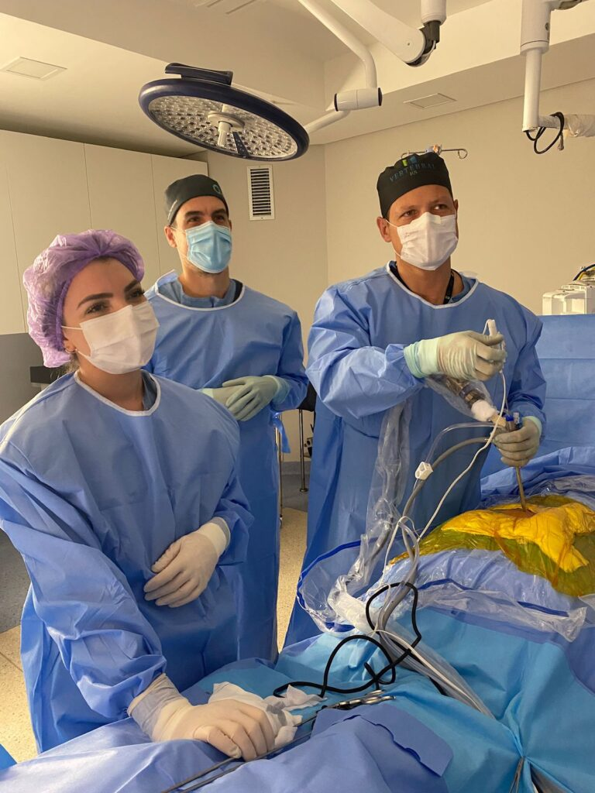

Em resumo
- Incisão de cerca de 1 cm, por onde passam a câmera e os instrumentos.
- Indicada principalmente em hérnias de disco lombares e cervicais com compressão de nervo.
- Em casos selecionados é feita com sedação, em regime de hospital-dia.
- Não serve para todos os casos: a indicação depende do exame físico e da ressonância.
O que é a cirurgia endoscópica da coluna
É uma cirurgia minimamente invasiva em que o cirurgião opera por uma cânula de cerca de 1 cm, guiado por uma câmera de alta definição. Por esse canal ele retira o fragmento de disco ou o tecido que comprime o nervo, sem precisar afastar grandes áreas de musculatura.
A imagem da câmera aparece ampliada em um monitor. O cirurgião enxerga o nervo e o disco de perto e trabalha com instrumentos finos, que passam pelo mesmo canal.

Para quem é indicada
A principal indicação é a hérnia de disco, lombar ou cervical, que comprime uma raiz nervosa e não melhorou com o tratamento clínico, ou que causa perda de força. Ela também pode ser usada em casos selecionados de estenose, quando o canal por onde passam os nervos está estreitado.
Protrusões e extrusões discais em diferentes posições podem ser tratadas por essa via: centrais, póstero-laterais, foraminais e extraforaminais. Em alguns casos é possível retirar fragmentos de disco que migraram.
Nem todo caso precisa de cirurgia. A maioria das hérnias de disco melhora com medicação, fisioterapia e, às vezes, bloqueios. E a técnica endoscópica não serve para todos: instabilidade da coluna e algumas deformidades pedem outras cirurgias.
Como a cirurgia é feita
Existem dois caminhos para chegar ao ponto da compressão:
- Via transforaminal: o acesso é lateral, pelo forame, a abertura natural por onde o nervo sai da coluna.
- Via interlaminar: o acesso é por trás, pelo espaço entre as lâminas de duas vértebras.
A escolha depende do nível da coluna e da posição da hérnia. Em casos selecionados, a cirurgia é feita com sedação e anestesia local, com o paciente indo para casa no mesmo dia. Em outros, a anestesia geral é a opção mais segura.

Vantagens e limitações
- Incisão pequena, com cicatriz discreta.
- Menor agressão à musculatura e menos dor no pós-operatório.
- Menor tempo de internação e recuperação mais rápida.
- Resultados semelhantes aos da microdiscectomia convencional quando bem indicada.
As limitações também existem. É uma técnica que exige treinamento específico e longa curva de aprendizado do cirurgião, e o material utilizado tem custo mais alto. Nem todo tipo de problema da coluna pode ser resolvido por ela.
Riscos
Como toda cirurgia, a endoscopia da coluna tem riscos, entre eles infecção, sangramento, lesão de nervo, lesão da membrana que envolve os nervos e retorno da hérnia. Eles são pouco frequentes e variam conforme o caso. São explicados em detalhe na consulta, antes de qualquer decisão.
Recuperação
Por agredir menos a musculatura, a recuperação tende a ser mais rápida e menos dolorosa do que na cirurgia aberta. O tempo de retorno ao trabalho e ao esporte varia de pessoa para pessoa e conforme a atividade, e é orientado individualmente nas consultas de acompanhamento.